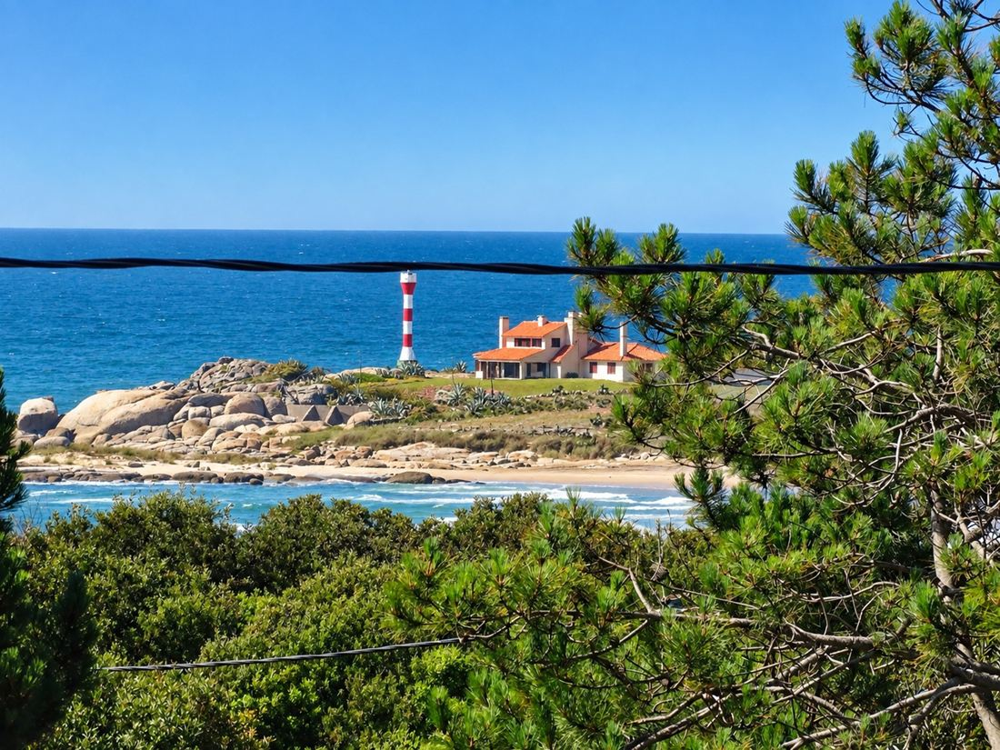

Nº 01 · Rocha
Punta del Diablo
Un pueblo de pescadores que creció sin prisa: calles de arena, casas de madera y un horizonte que se gana caminando hasta el Cerro de las Tunas.
- Pueblo de pescadores artesanal
- Surf y mar abierto en Playa Grande
- Tres de nuestras cuatro casas